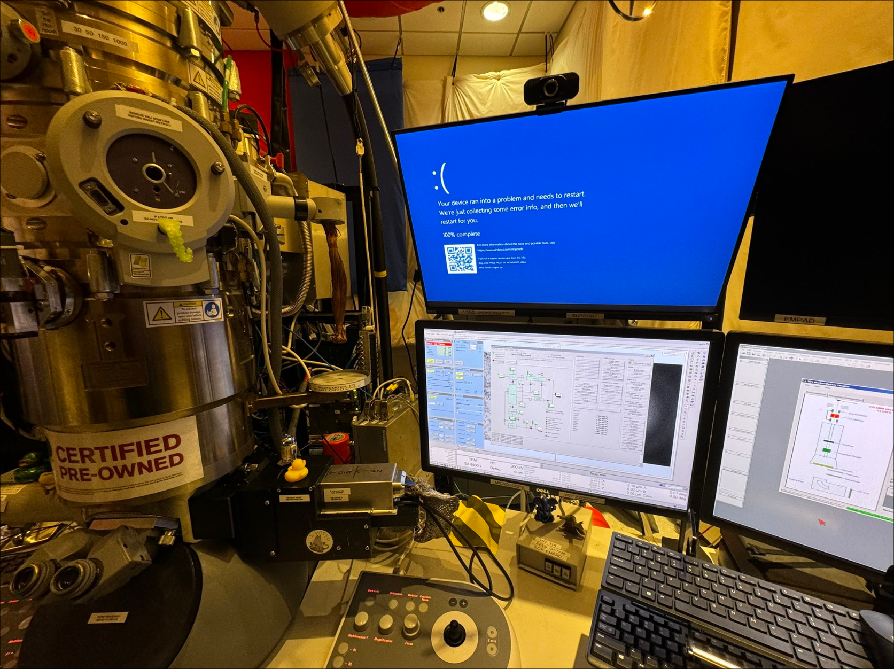
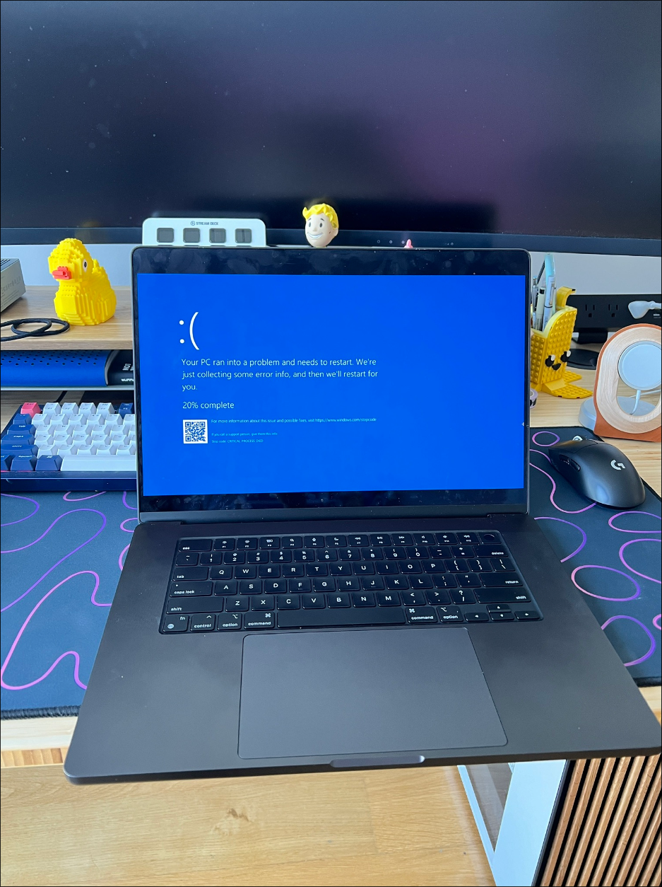
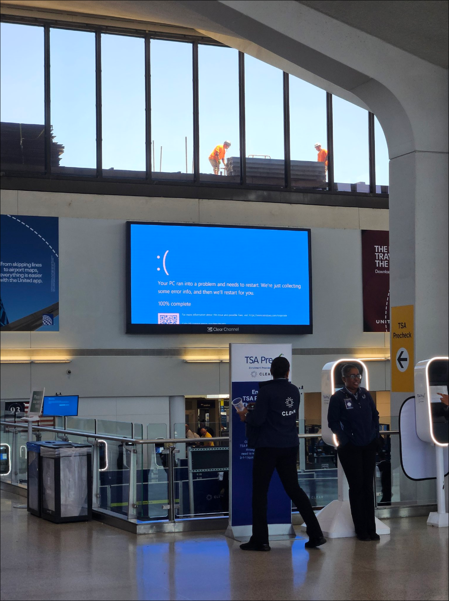
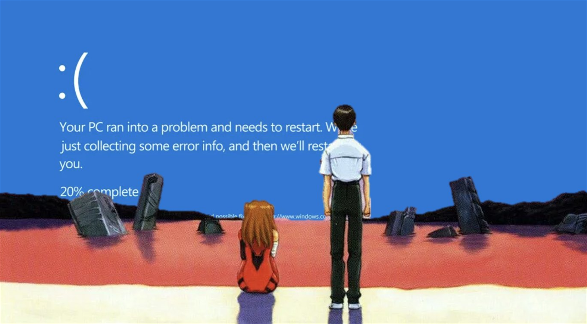

International BSOD Gallery
On 2024-07-19 there was a major windows BSOD issue as a result of an update from crowdstrike. This led to more than 8 million computers across the globe on a boot loop with BSOD that affected organisations like banks and airports. Lots of people got a free day from work because their work laptop suffered from this boot loop (I didn’t because my work laptop is a mac).
This is the Y2K we never got. Given the eerieness of the whole situation, I’ve collected a small set of images to remember the day the world learnt the power of a white on blue sad emoticon :(.
 
 